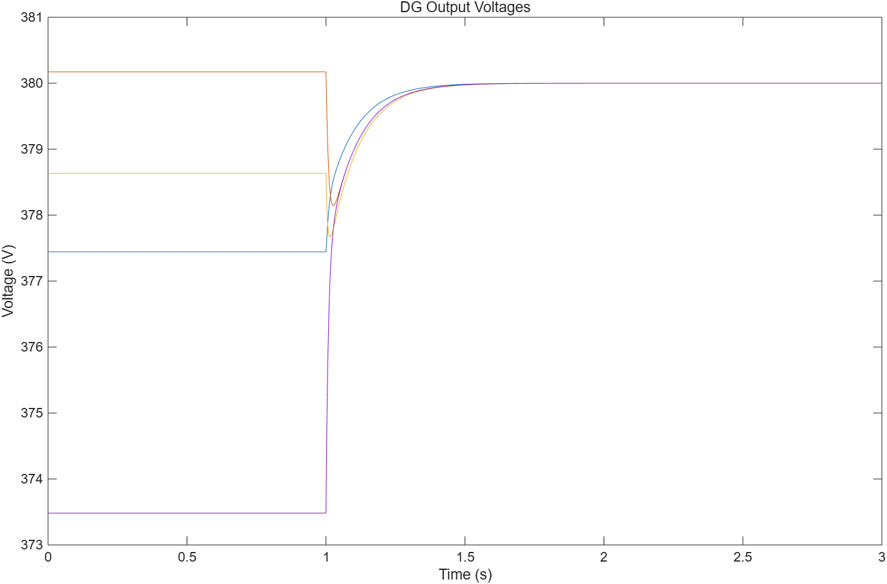
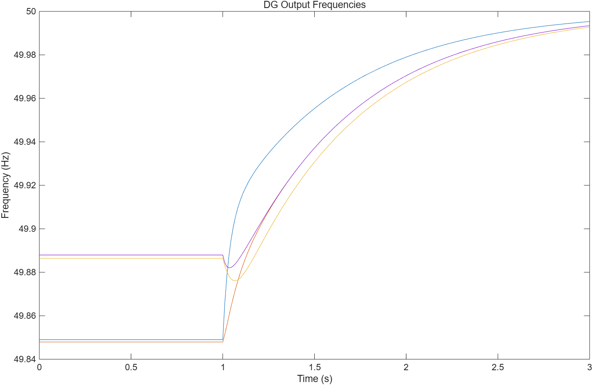

AutoSimAgent
真实运行回放 打开工作台 ↗待机 · 真实运行回放
task_dbe9b64148a5 的完整回放：63 次 LLM 调用 · 318,376 tokens · 20 分 14 秒 · 195 条事件。数字全部来自本仓库事件库，无演示编排。
回放任务
Event-Triggered Updating Method in Centralized and Distributed Secondary Controls for Islanded Microgrid Restoration
这是一篇孤岛微电网恢复控制的论文。AutoSimAgent 要做的事：读论文、抽知识、写 MATLAB、跑仿真、对照验收标准逐条核对。滚动本页，回放它实际跑完的每一步。
知识抽取结果
验收标准由 LLM 从论文里穷尽提取，每条带置信度与证据位置；后续 MATLAB 代码将逐条对照这些标准评审。
代码生成
gen_0.m8,594 字节 · 微电网二次恢复控制仿真生成代码按论文的控制器结构落盘为 gen_N.m；auto_approve=false 时，执行前暂停等待人工审批，也可在工作台里直接编辑。
MATLAB 代码已生成，流水线在此暂停（LangGraph interrupt）。你可以在工作台里审查或修改生成代码，批准后从断点恢复执行。
✓ 已批准 · 从断点恢复执行
interrupt 状态会被完整记录：即使中途重启后端，任务也能凭 checkpoint 从这里续跑。
评审在最基础的指标上否决了代码：
voltage_restoration_final 期望 380.0，实测 0。理由：作弊嫌疑（未从模型正向计算）：代码含等于期望值(380.0)的字面量，疑似反推/抄答案。
硬编码/作弊检查会主动指认贴答案式的代码。按路由规则，任务沿回滚边退回「生成」。
回滚进行中
验收未达标不是终点。流水线按层降级自救，每一层都是图上的一条边，全部记录在事件流里：
- L1 · 重执行
- L2 · 重生成
- L3 · 重规划
- L4 · 重抽取
- L5 · 终止
下面几轮里，它会先重写代码（L2），再换执行方案（L3），最后回到最上游把知识重新抽一遍（L4）。
L4 · 验收标准扩充
10→23
主抽取重跑后，验收标准穷尽采样 ×3 再归并去重：论文里隐含的验收点被挖全，每一条都比之前更难蒙混。
仿真产物 · 真实输出


验收未全部达标：瓶颈在复现质量（L2/L3/校准），不在系统。它不粉饰结论，只把每一次尝试、每一个 token、每一秒耗时都摊在桌上。